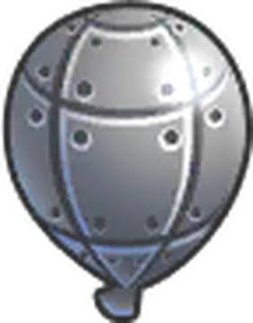

Balões
Os balões possuem características diferentes, e cada tipo exige estratégias específicas para ser estourado. Os balões mais resistentes aparecem conforme as rodadas avançam, tornando o jogo cada vez mais desafiador, veja alguns balões presentes no jogo:
Balões Básicos:

Balão Vermelho
É o mais simples e precisa de apenas um acerto para ser estourado.

Balão Azul
Ao ser estourado, transforma-se em um balão vermelho.

Balão Verde
Contém um balão azul em seu interior.

Balão Amarelo
Contém um verde e é mais rápido dos balões básicos.

Balão Rosa
Contém um amarelo e é um dos balões comuns mais rápidos.

Balão Preto
Transforma-se em dois balões rosa e é imune a explosões.

Balão Branco
Transforma-se em dois balões rosa e é imune a ataques de congelamento.

Balão Roxo
Transforma-se em dois balões rosa e é imune a ataques de fogo, plasma e energia.

Balão Zebra
Contém um balão preto e um branco, é uma junção do balão preto e branco em um só, sendo imune a explosões e congelamento.

Balão de Chumbo
Contém um balão preto e um branco, é uma junção do balão preto e branco em um só, sendo imune a explosões e congelamento.